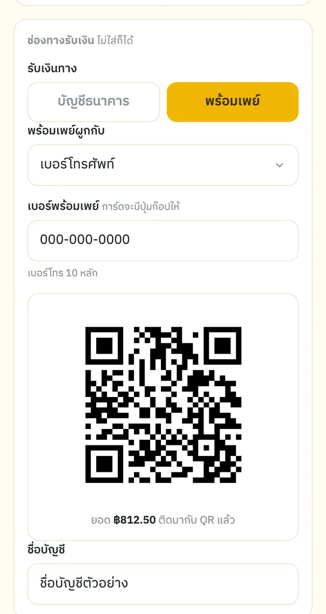
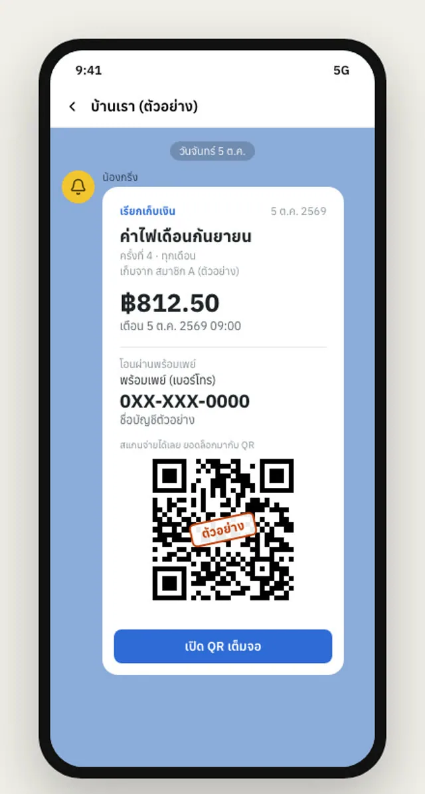
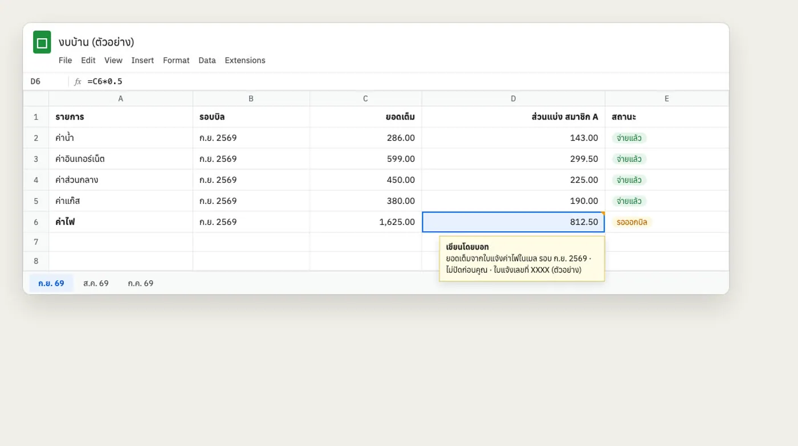
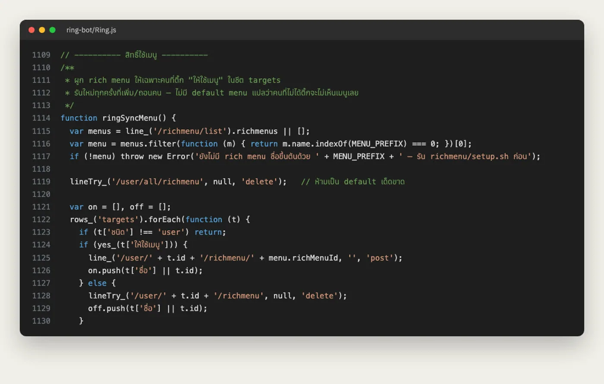

Nong Kring — a bot that bills the household electricity
A bot that started by sending good-morning images, then grew into a billing system that runs itself every month — amounts can be audited, payers just scan, and nobody has to remember or chase anyone anymore

The electricity bill arrives by email → the amount goes into the sheet as an auditable formula → on the due date, a bill with a PromptPay QR pops up in the LINE chat of whoever has to pay. Nobody opens a PDF to read numbers anymore, and 6 checks stop a wrong bill from going out.
The exact same job every month, but someone has to remember it and someone has to ask for the money
Splitting the household electricity bill follows the same steps every month, and can go wrong every month too

Every month: open email, find the electricity bill, read the amount from a PDF, work out each share on a calculator, type it into the sheet, then message everyone in LINE with the bank account number. None of the steps are hard, but every one of them has to happen, every month, with one person remembering.
The amount sits in a PDF someone has to open
The bill comes as an attachment. You open it, read the number, then retype it by hand, which is where numbers are most likely to go wrong in the whole process.
Shares worked out on a calculator can't be audited
Only the result goes into the sheet. Come back next month and there is no way to tell what the full amount was, what it was multiplied by, or where it was rounded.
Asking family members for money has an emotional cost
Even when the amount is right and it is due, typing out the reminder yourself keeps getting put off, until you end up covering it every month
Sending just an account number means the payer has to type it all again
The payer copies the account number, switches to the banking app, pastes it and types the amount. Every step is a chance for a typo and a chance to put it off.
Build on the bot the family already uses, instead of getting everyone onto a new app
The real constraint wasn't technology. It was “what will the family actually open”.

| Option | What the payer has to do | Cost | Why rejected / chosen |
|---|---|---|---|
| Off-the-shelf bill-splitting app | Download, sign up, learn it | Free / monthly | More features than needed, but the whole family would have to move into an app nobody opens |
| Keep sending reminders by hand | Nothing new | Someone's effort every month | It works when it gets done. The problem is that it depends on one person remembering and being willing to ask that month. |
| Build on the existing LINE bot Chosen | Open LINE and scan the QR | None | The bot is already in the family LINE, so payers install nothing, and the shortest way to pay is scanning a QR with the amount already locked in |
Two projects that talk through the sheet, not through each other's APIs
One side owns “is the amount right?”, the other owns “did it get delivered?”, and each can be changed without breaking the other

No sending to LINE through a back door. Every automated job must first create a record in the bills sheet, then let the existing sender, which wakes every 5 minutes, send it, update the status and log the result. Allow even one shortcut and there will be messages that went out with no trace of who sent what.
How it works — 5 steps, from email in to money in
It all happens without anyone pressing anything. Timing is accurate to about 5 minutes, the trigger interval.


Read the bill from email
Extract the total and billing period from the electronic bill, and remember the bill number so the same bill is never processed twice
Write a formula to the sheet, not a finished number
Written as =full_amount*share, without rounding the total before multiplying. Open it next month and the source of every number is still visible.
Pass 6 checks before issuing a bill
If it isn't ready, nothing gets created and it tries again next round. Better than sending a wrong bill to family.
Generate a separate PromptPay QR for each person's amount
The payload is assembled on the server only. The web page just draws it. Enter an amount and it is locked into the QR.
Send the bill card to LINE and log the result
The main button opens the QR full screen, no account number to copy · Only bills without a QR show a copy-account-number button
Seven pitfalls I hit once it was running for real
Most of them aren't in the platform docs. I had to run into them and design around them.

The free message quota is limited, and menu buttons can eat it if built the wrong way
A free account can only send a limited number of push messages per month. If every button press replied with a push message, the quota would run out by mid-month before a single real bill went out.
Missing one send is acceptable · Sending twice is not
The trigger wakes every 5 minutes. If the status is written only after a successful send and the send hangs or fails midway, the next round sends again right away, and the payer gets the same bill over and over.
A wrong bill can't be recalled once sent
If the sheet isn't finished that month, or a formula has been edited by hand into the wrong shape, a system with no checks sends a wrong amount to family immediately
Relying on row numbers breaks the moment someone inserts a row
The electricity line had moved between months because someone edited the sheet by hand. Code that remembers “the amount is in row N” quietly picks up another item's number, with no visible error.
A monthly bill that counts from the previous cycle keeps drifting
In months without a 31st, if the date shifts to the 1st of the next month and later cycles count from there, the schedule slowly drifts away from the intended date until it lands in the wrong month
Can't fetch the group member list automatically, even with group access
I wanted the bot to know who was in the group on its own, then found that the endpoint for it is only open to verified accounts. Calling it returned a permission denied status.
A QR with one wrong trailing digit is a QR that won't scan
The payment code ends in a checksum. Get it even slightly wrong and the banking app refuses to read it, and all you see is “can't scan”, which is very hard to trace
Everything the system does has to be traceable
For a system that handles other people's money, trust comes from “can be audited” more than “runs smoothly”

- Amounts in the sheet are formulas, not results — open any month and you can still see the total, the share it was multiplied by, and that it wasn't rounded first
- Three separate logs — the bill list before sending · the actual send results · and a log from the automated job showing monthly status, with reasons when a check fails
- A repeated error is logged once until its cause changes — a log full of duplicate lines every 5 minutes is a log nobody reads
- A preview command before going live — reads out the tab, category and amount for a visual check before letting it send for real
What I deliberately didn't do
This system touches both money and family, so boundaries matter more than capabilities

Ring.js — removes the default menu every time, then links the menu person by person based on the ticks in the sheet- No default menu for everyone — someone who only adds the bot sees no menu and has no way to open the billing form. Access is granted per person and can be revoked.
- All real values live outside the code — the payee number, destinations and access tokens are in a settings store that never goes into git, even though the repo is public
- Don't touch the budget side unless necessary — that side owns where the amounts and formulas come from. Changing both sides at once is the fastest way to lose track of whose fault a wrong number is.
- Aware that generating the QR image through an outside service means the amount and payee number leave the system at one point — a trade-off documented openly, not one let through quietly